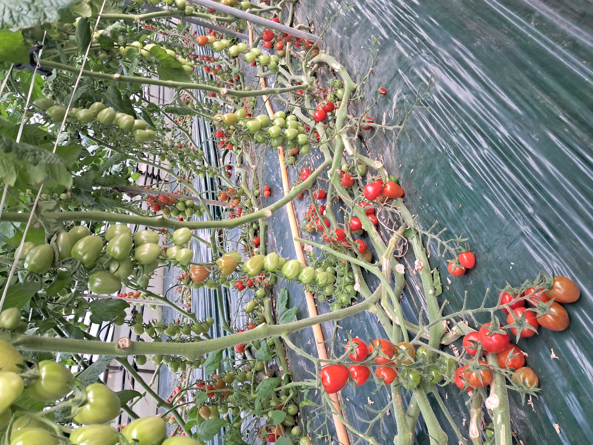
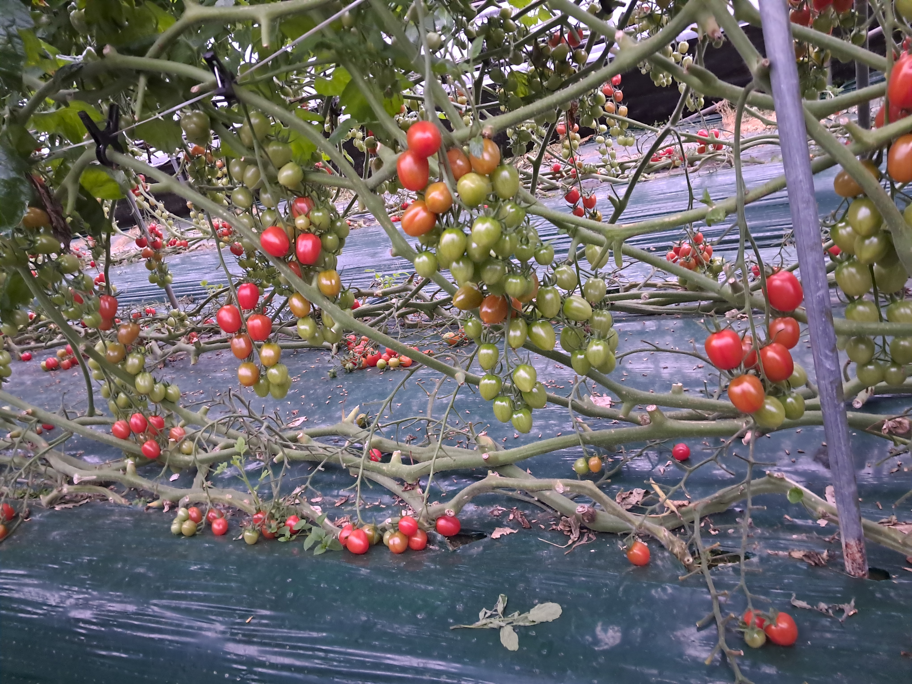
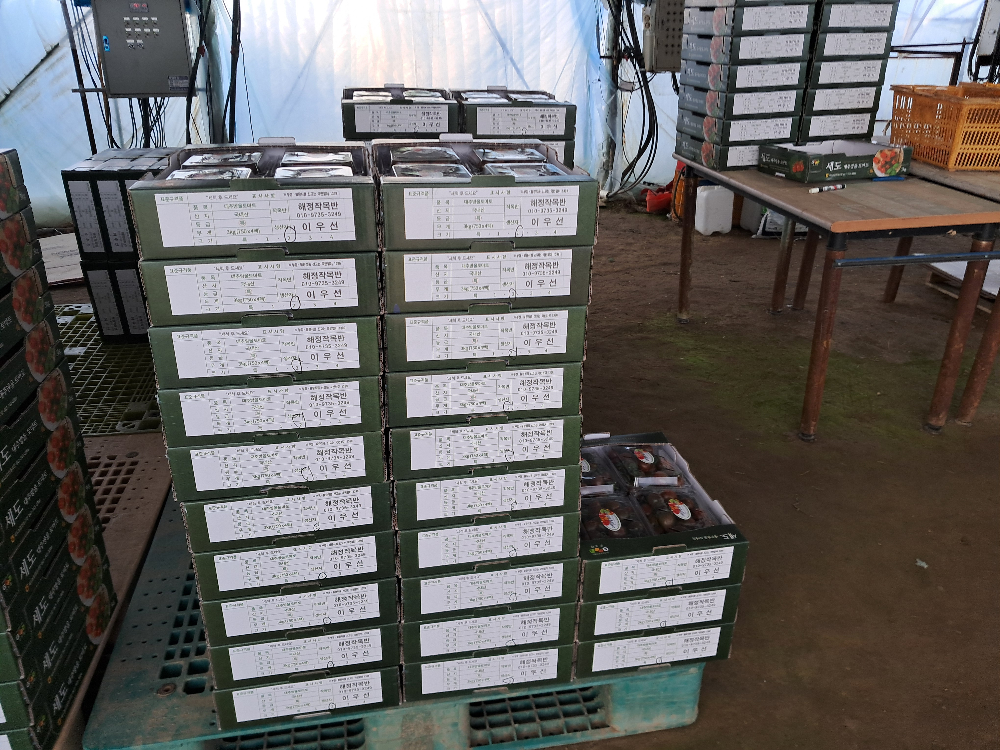
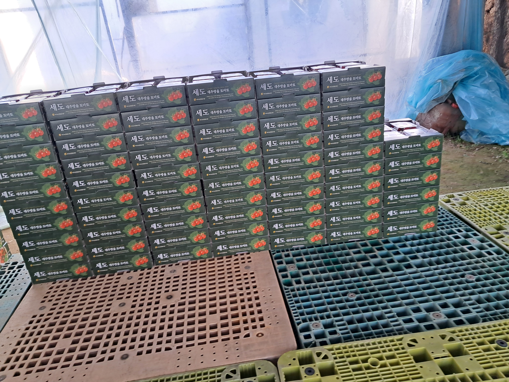
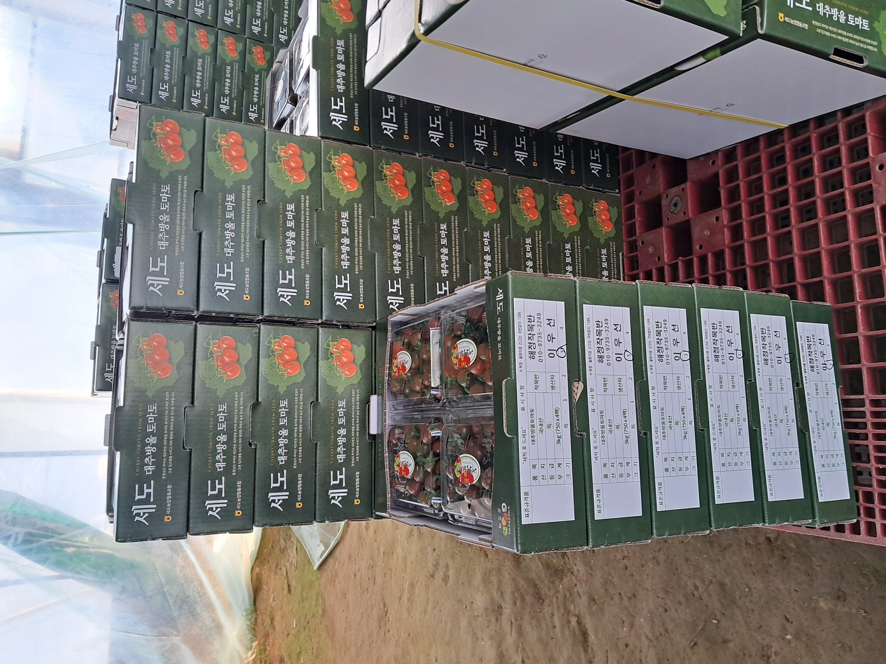
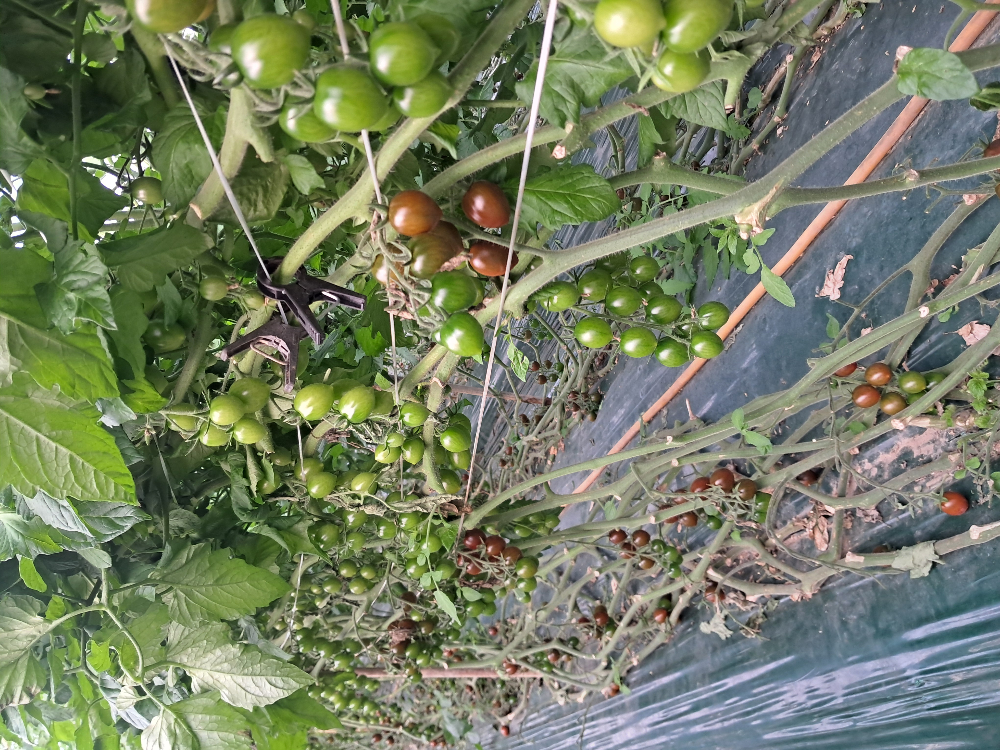
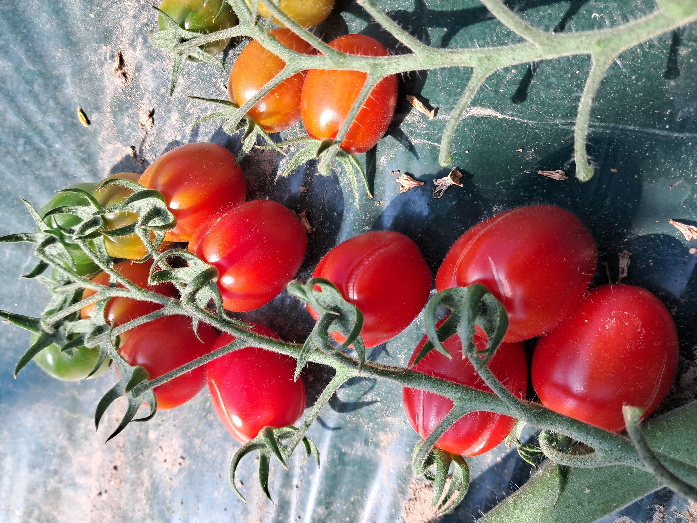
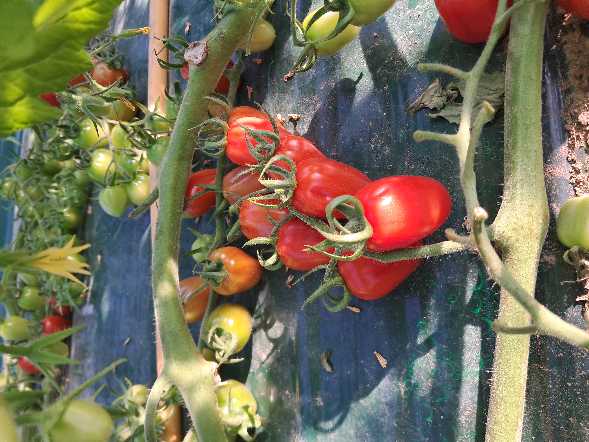
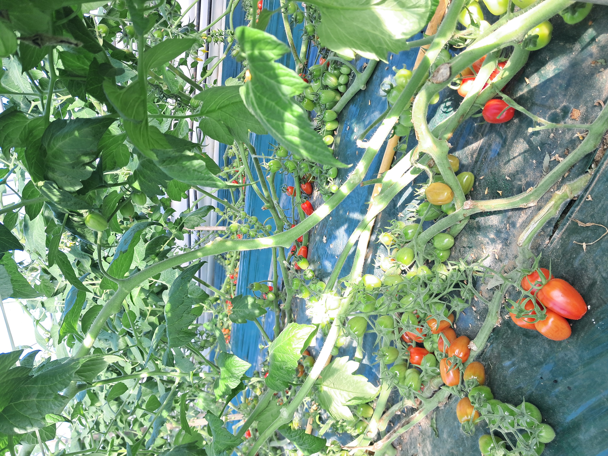
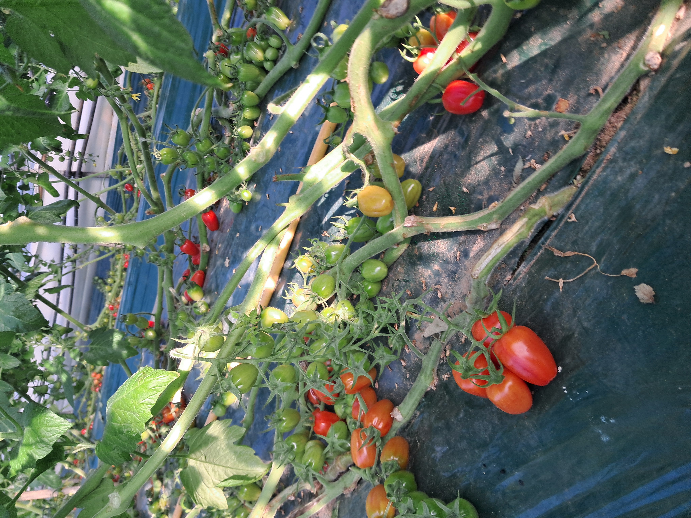

01
하우스 관리
매일 작물과 재배 환경을 살핍니다.
똘똘이는 30년 넘게 농사를 지어온 경험을 바탕으로 올해도 새로운 작기를 시작합니다. 토마토의 작은 변화 하나까지 살피며, 좋은 열매가 익어가는 시간을 함께 만들어갑니다.
30년 이상 이어온 농사 경험
올해의 방울토마토도 서두르지 않고 정성껏 키워갑니다.
지금은 올해 농사의 시작 단계입니다. 하우스를 살피고 작물이 자라는 과정을 기록하며, 수확의 순간까지 차근차근 이어갑니다.
매일 작물과 재배 환경을 살핍니다.
토마토가 건강하게 자랄 수 있도록 관리합니다.
수확철 좋은 열매를 골라 준비합니다.
신선하게 받아보실 수 있도록 포장합니다.

똘똘이의 방울토마토는 하우스에서 자라는 과정을 하나씩 기록합니다. 수확철에는 실제 상품 정보와 선별·포장 과정을 더해 고객에게 투명하게 보여드릴 예정입니다.
작은 열매가 자라는 순간부터 수확하는 날까지. 똘똘이의 농장 이야기를 사진과 글로 차곡차곡 기록합니다.
하우스와 토마토, 그리고 농장의 하루를 담았습니다.








